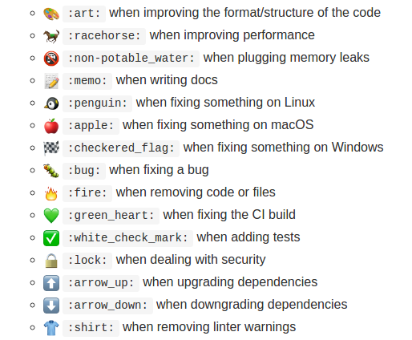
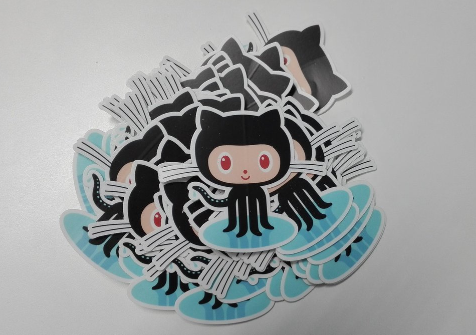

GitHub - Tips & tricks
Maxence POUTORD
#1 - Github = Git + hub
Installation
# MacOS $ brew install hub # Unix $ git clone https://github.com/github/hub.git && cd hub # assuming that `~/bin` is in your PATH: $ script/build -o ~/bin/hub$ alias git='hub'$ git --version git version 2.7.4 hub version 2.3.0
$ hub
$ git
# ...
These GitHub commands are provided by hub:
pull-request Open a pull request on GitHub
fork Make a fork of a remote repository on GitHub and add as remote
create Create this repository on GitHub and add GitHub as origin
browse Open a GitHub page in the default browser
compare Open a compare page on GitHub
release List or create releases
issue List or create issues
ci-status Show the CI status of a commit
#2 - ...or Github = SVN + hub

Example
$ git clone https://github.com/user/repo
$ git commit -m 'my amazing work!'
$ git push
$ svn co --depth empty https://github.com/user/repo
$ svn commit -m 'my amazing work!'
#3 - GMF: a Markdown on steroid
Tables
| First Header | Second Header |
| ------------- | ------------- |
| Content Cell | Content Cell |
| Content Cell | Content Cell |
Syntax color
```
if (score === 100) {
console.log("Yihaaa!")
}
```
```javascript
if (score === 100) {
console.log("Yihaaa!")
}
```
blockquote
> this text is quoted
Or better: select text and press R
Task Lists
- [x] Prepare slides
- [ ] Give this talk
- [x] @maxpou fix issue #1
...and other HTML Tags
License (MIT)
The MIT License (MIT)
Copyright (c) 2017 Maxence POUTORD
Permission is hereby granted, free of charge, to any person obtaining a copy
of this software and associated documentation files (the "Software")
[...]
#4 - Github Pages
Managing dependencies?
Think about git submodules!
$ git submodule add https://github.com/hakimel/reveal.js
#5 - URL everywhere
To exist, each action must have a specific URL.
Removing whithespaces
github.com/user/repo/commit/commit_sha1?w=1

.diff & .patch
highlight lines
#6 - Emoji 😍
Good example: Atom contributing’s style guides
Full article
maxpou.fr/github-tips-and-tricksThank you
Questions?

@_maxpou
Bonus
I have some stikers !
